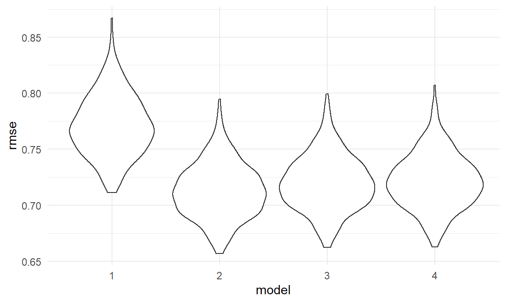

Linear Regression
2020/11/28
Tidy the Dataset
Import the Dataset
also do descriptive statistics
games_df =
games_data %>%
mutate(
genre =
case_when(
genre %in% c('action','action_adventure',"adventure", "fighting") ~ 'Action',
genre %in% c('racing','sports') ~ 'Competition',
genre %in% c('role_playing', 'simulation') ~ 'Experience',
genre %in% c('strategy','puzzle') ~ 'Intelligence',
genre %in% c('platform', 'shooting')~ 'Agility',
genre == 'miscellaneous' ~ "Miscellaneous")
) %>%
mutate(
n_platforms =
case_when(n_platforms == '1' ~ 'small',
n_platforms >= '2' & n_platforms <= '3' ~ 'medium',
n_platforms >= '4' ~ 'large'),
n_platforms = as.factor(n_platforms)
) %>%
dplyr::select(title:genre,critic_score, total_sale)ANOVA Test
Genre
genre
Whether there are true differences in games sales among different genre?
Anova test shows that there are significant differences of average total_sales between genre and % of comparisons in Tukey’s method have signigicant differences.
genre * console_developer
aov_mod_2 = aov(total_sale ~ console_developer * genre, data = games_df)
broom::tidy(aov_mod_2)## # A tibble: 4 x 6
## term df sumsq meansq statistic p.value
## <chr> <dbl> <dbl> <dbl> <dbl> <dbl>
## 1 console_developer 2 23.8 11.9 2.99 5.04e- 2
## 2 genre 5 213. 42.6 10.7 2.91e-10
## 3 console_developer:genre 10 251. 25.1 6.30 1.08e- 9
## 4 Residuals 7322 29159. 3.98 NA NAmulti_comp_2 = TukeyHSD(aov_mod_2)
ori_df =
broom::tidy(multi_comp_2) %>%
filter(term == 'console_developer:genre') %>%
na.omit()
multi_df =
ori_df %>%
filter(adj.p.value < 0.05)When considering interaction between console_developers and genre, the differences is still significant in anova model, with 36 significant different combinations among 153 combinations of developers and genre
Number of Platforms
n_platforms
Whether there are true differences in sales among games on small, mdeium and large number of consoles?
Anova test shows that there are significant differences of average total_sales between games on different number of consoles and all comparisons in Tukey’s method have signigicant differences.
n_platforms * console_developer
aov_mod_4 = aov(total_sale ~ console_developer * n_platforms, data = games_df)
broom::tidy(aov_mod_4)## # A tibble: 4 x 6
## term df sumsq meansq statistic p.value
## <chr> <dbl> <dbl> <dbl> <dbl> <dbl>
## 1 console_developer 2 23.8 11.9 3.00 4.99e- 2
## 2 n_platforms 2 105. 52.7 13.3 1.74e- 6
## 3 console_developer:n_platforms 4 414. 103. 26.1 1.74e-21
## 4 Residuals 7331 29104. 3.97 NA NAmulti_comp_4 = TukeyHSD(aov_mod_4)
ori_df_2 =
broom::tidy(multi_comp_4) %>%
filter(term == 'console_developer:n_platforms') %>%
na.omit()
multi_df_2 =
ori_df_2 %>%
filter(adj.p.value < 0.05)Also, when considering interaction between console_developers and number of platforms a game is on, the differences is still significant, with 21 significant different combinations among 36 combinations of developers and number of consoles
Regression Models
regression_df =
games_df %>%
filter(total_sale < 5) # cutoff outliersModel 1: total_sale ~ console_developergenre + console_developern_platforms
lm_1 = lm(total_sale ~ console_developer*genre + console_developer*n_platforms, data = regression_df)Model 2: total_sale ~ console_developergenre + console_developern_platforms + console_developer*critic_score
lm2 = lm(total_sale ~ console_developer*genre + console_developer*n_platforms + console_developer*critic_score, data = regression_df)
coe1_df = lm2$coefficients
coe1_df = coe1_df [-(2:11)] %>%
data.frame() %>%
rename(coefficient = '.')
coe1_df = mutate(coe1_df,name0 = rownames(coe1_df)) %>%
mutate( name1 = map(.x = name0, ~str_split(.x, pattern = ':')[[1]][1])) %>%
mutate( variable = map(.x = name0, ~str_split(.x, pattern = ':')[[1]][2])) %>%
dplyr::select(-name0) %>%
pivot_wider(names_from = 'name1', values_from = 'coefficient')
knitr::kable(coe1_df)| variable | (Intercept) | console_developerNintendo | console_developerSony |
|---|---|---|---|
| NA | -0.8349797 | NA | NA |
| genreAgility | NA | -0.1018364 | -0.0712082 |
| genreCompetition | NA | -0.0249084 | 0.0543575 |
| genreExperience | NA | 0.0671646 | -0.2485996 |
| genreIntelligence | NA | 0.1292356 | -0.2052032 |
| genreMiscellaneous | NA | 0.3498507 | -0.2044685 |
| n_platformsmedium | NA | 0.2104355 | -0.0016323 |
| n_platformssmall | NA | 0.2855924 | -0.1395550 |
| critic_score | NA | -0.1081446 | 0.0517857 |
coe2_df = lm2$coefficients
coe2_df = coe2_df[1:11] %>%
data.frame() %>%
rename(coefficient ='.' ) %>%
knitr::kable()
coe2_df| coefficient | |
|---|---|
| (Intercept) | -0.8349797 |
| console_developerNintendo | 0.4883362 |
| console_developerSony | -0.1294638 |
| genreAgility | 0.1533798 |
| genreCompetition | -0.0312483 |
| genreExperience | 0.0577424 |
| genreIntelligence | -0.2241547 |
| genreMiscellaneous | 0.2046807 |
| n_platformsmedium | -0.3061644 |
| n_platformssmall | -0.2745964 |
| critic_score | 0.2300561 |
regression_df %>%
add_predictions(lm2) %>%
add_residuals(lm2) %>%
ggplot(aes(x = pred, y = resid))+
geom_point(alpha = 0.3)+
geom_smooth(method = 'lm', color = 'red')+
labs(x = 'fitted values of total_sales', y = 'model residuals', title = 'Residuals vs fitted values')
Model 3: total_sale ~ console_developergenre + console_developercritic_score
lm3 = lm(total_sale ~ console_developer*genre + console_developer*critic_score, data = regression_df)Model 4 : total_sale ~ console_developern_platforms + console_developercritic_score
lm4 = lm(total_sale ~ console_developer*n_platforms + console_developer*critic_score, data = regression_df)Cross Validation
Decide which predictor should be included in the final model, then consider if it’s necessary to add some (but not all) regional sale into the model.
cv_df %>%
dplyr::select(starts_with("rmse")) %>%
pivot_longer(
everything(),
names_to = "model",
values_to = "rmse",
names_prefix = "rmse_"
) %>%
ggplot(aes(x = model, y = rmse)) +
geom_violin()